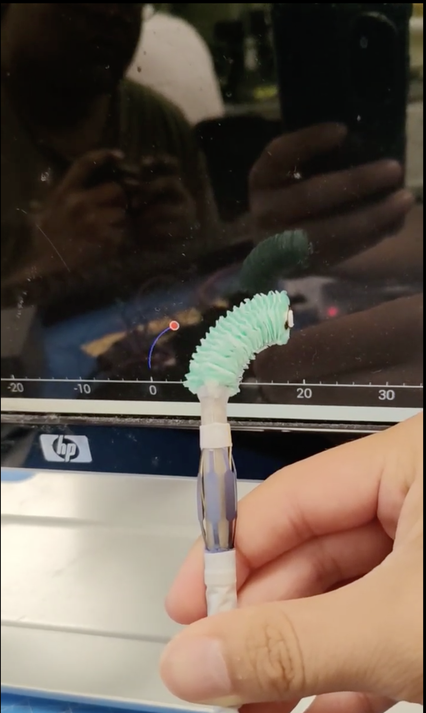
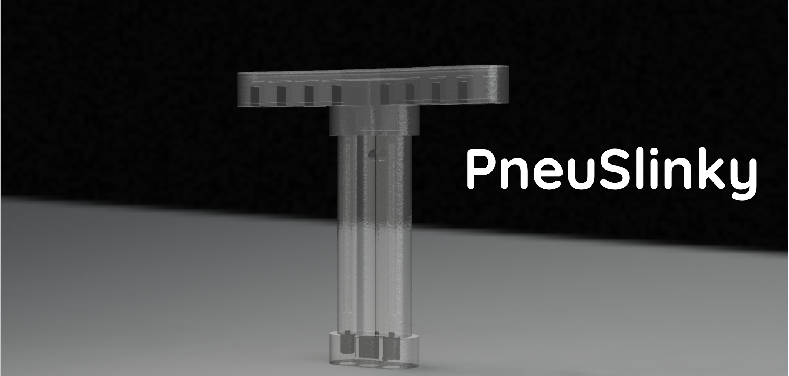
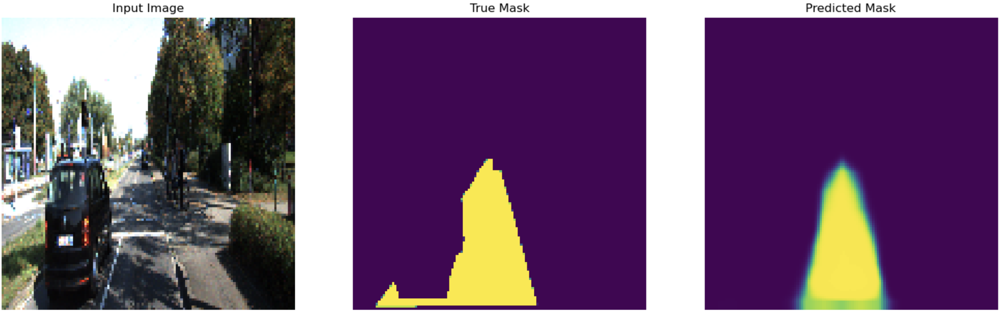
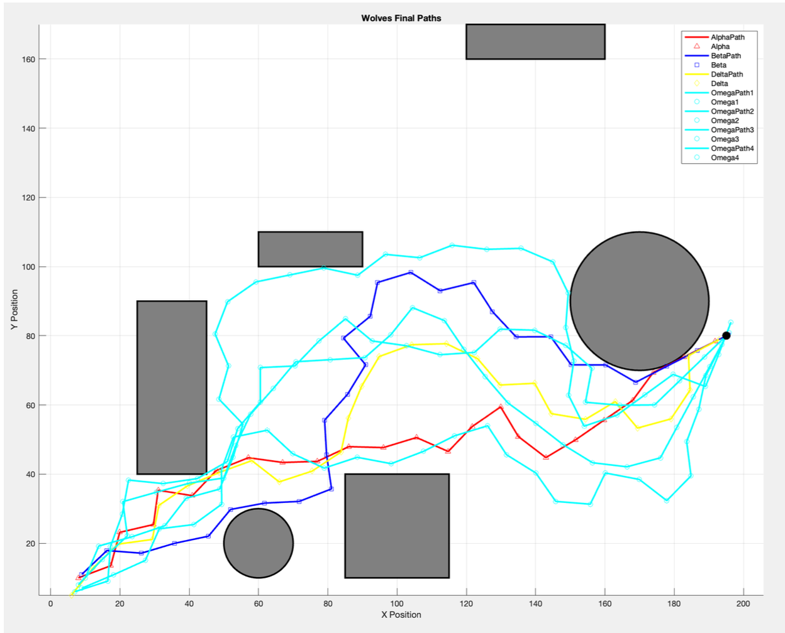
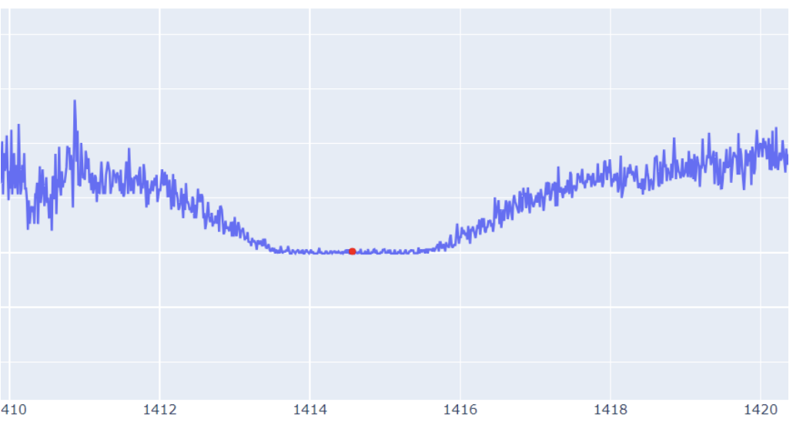

Building Intelligent
Robotic Systems
I engineer machines that sense, think, and move — from soft actuators assisting cardiac surgery to ML models predicting infant growth. My work lives at the intersection of controls, perception, and deep learning.

Where Controls Meet
Deep Learning
I build robots and the software that makes them do something useful. Did my B.Tech in AI Engineering at Amrita Vishwa Vidyapeetham, then moved to Boston for an M.S. in Robotics & Autonomous Systems at BU. Along the way I've worked on soft robotics, computer vision, and real-time perception.
I like getting my hands on every layer of a robot. Writing control loops, training vision models, wiring up sensors, debugging why the motor does that weird thing at 2 AM. If the problem lives where code meets the physical world, that's where I want to be.
- Built a single-page web app in Google AI Studio's Vibe Coding environment to help shared households manage recurring chores, track completion, and avoid conflicts.
- Engineered a Python/Scikit-learn pipeline that cleans a 10k-record, class-balanced age-palate dataset and feeds weighted features into an XGBoost classifier, using stratified GridSearchCV over eight hyperparameters to boost balanced-accuracy.
- Packaged the best model as a joblib artifact and paired it with a PCHIP growth-curve forecaster that outputs 0.5-month palate-growth & pacifier-size projections to 24 months.
- Migrated catheter-control stack from Arduino to Raspberry Pi (embedded Linux, Python), reducing command latency for real-time control; performed motor calibrations.
- Integrated I²C motor controllers and authored a PyQt GUI for real-time visualization and parameter tuning.
- Built dynamic models of continuum soft actuators using constant-curvature assumptions to enable low-latency control loops.
- Applied 3D reconstruction techniques to integrate multi-source geometry (STL files, fluoroscope images), producing structured 3D spatial models for point cloud/mesh generation.
- Developed and deployed a RetinaNet SBA detector that processes fluoroscopic video at 30 FPS (512×512), achieving 85% accuracy for closed-loop catheter guidance.
- Managed large-scale data pipelines to label and process 1000+ images/batch for defect detection using Python + OpenCV.
- Improved inference throughput by 40% by implementing batch optimization and multi-threaded data ingestion.
- Incorporated data augmentation and feature engineering, boosting model robustness and scalability.

Advanced soft robotic systems for cardiac surgery by transitioning control from Arduino to Raspberry Pi, developing a real-time GUI for force/position visualization, and building an SBA detection system using RetinaNet for X-ray tracking.

A novel soft robotic system combining pneumatic actuation and bio-inspired mechanisms. Built from DragonSkin 10 and EcoFlex 30, featuring inflatable anchors for diverse terrain mobility and a pneu-net gripper grasping objects up to 10 cm in diameter.

Developed lane detection pipelines combining classical (Canny/Hough) and deep learning (FCN-VGG19) methods for semantic understanding of road scenes. Reached 0.418 mean IoU with near-real-time (~30 fps) inference and built a reproducible Python pipeline for data preparation, training, and evaluation.

A teleoperated robotic hand system integrating optical sensing for precise finger tracking and haptic feedback for intuitive remote manipulation, enabling dexterous control across distances.

A bio-inspired wolf hunting strategy mapping pack roles (Alpha-Omega) to coordinated multi-robot behaviors, with EKF-SLAM for joint map exploration and self-localization, plus EKF-based prey state estimation. Currently under development with simulation prototypes for SLAM-based target tracking and role switching.

An AI-powered system for automated detection and spectral analysis of quasars, leveraging deep learning to classify and characterize astronomical objects from survey data.
at the Laws of Physics
What happens when AI-assisted "vibecoding" meets robotics? I stress-tested generative AI across perception, planning, and control — documenting every win, failure, and moment a human had to step in. In software, hallucinations produce bugs; in robotics, they can cause physical harm.
Let's Build
Something Together
January 2025 graduate actively seeking full-time roles in Robotics and Artificial Intelligence. Whether you have a role, a research collaboration, or just want to talk robots — I'd love to hear from you.